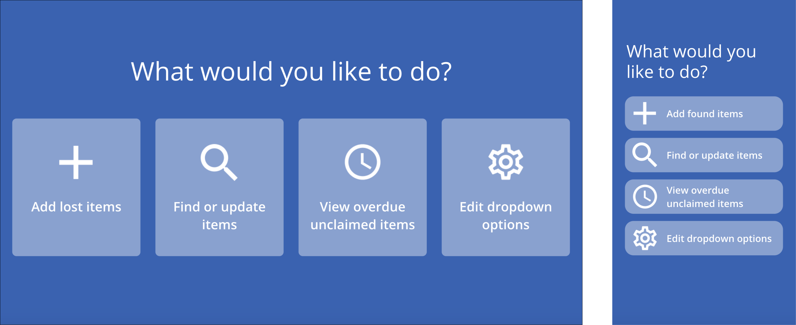
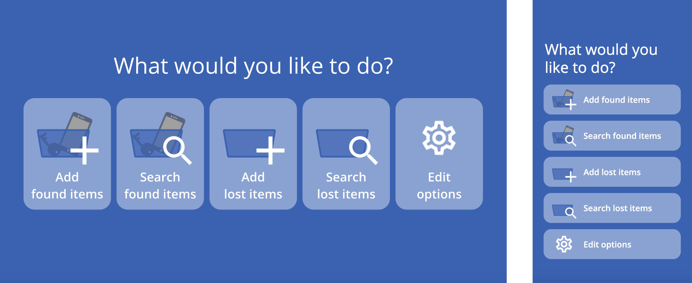
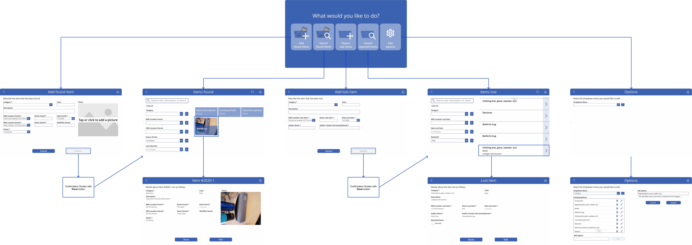
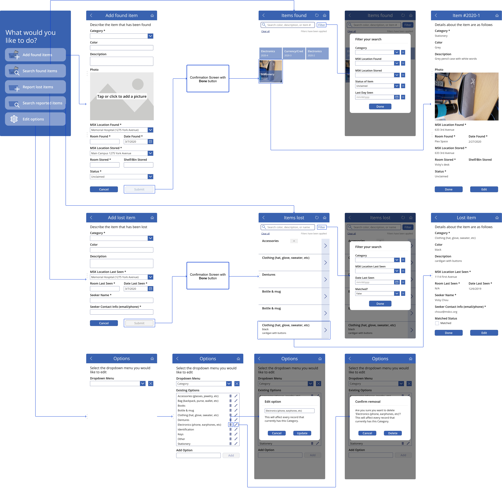

09/2019 – Present
myself
citizen developer
beta-testing
Shortly after joining the MWM team, I was informed of a general need from the security team to help them improve their existing filing system of tracking lost-and-found items at the hospital.
To get a deeper understanding of who our users were and what their needs were, my team and I met up with a few of the security managers at the main security office.
Specifically, we wanted to gauge their current processes, explore the pros and cons of any alternatives they have tried, and gather specific feature requirements they wanted in their ideal solution.
Some of the main features they wanted thus included:
As my team and I left the security manager's office that morning, we coincidentally walked into a real-time interaction between a visitor asking about an item she had lost and a security officer trying to find said item.
It was then that I realized how important this project was – seeing the security officer flip through pages and pages of paper in their large blue binder to try and find the one with the visitor's item in order to know which shelf and bin the item was stored in showed just how inefficient the security team's current process was.
With my interview notes in front of me, I made a few quick sketches and created my first PowerApp.
(At this point, I was working mostly independently.)
I created a desktop/tablet application first because I noticed that there was always at least one security officer by the computer and the lost-and-found binder. I later created a mobile application as well when I realized that the security team as a whole will likely be out and about, recording items that they or others find in the hospital.
After showing the security managers my web applications and receiving positive feedback, I was asked to add a few more features, such as:
They also mentioned that some visitors may just show up at the security office looking for an item that has not yet been found, which meant that for the first time, the security team needed some way of recording lost (not found) items as well.
It was then that I realized that lost items may not actually be lost if you're looking at them from a different perspective.
For the patients and visitors who go into the security office to look for their belongings, their lost items are still lost. But for the officers, managers, and supervisors who work in the security office to return belongings, the lost items have been found.
As such, I began to make more of a conscious decision to distinguish between "lost" items and "found" items through the perspective of my users – the security team.
As I went back to my desk to begin iterating on my app, I realized that in addition to adding lost items, my users would also need some way to search through and update details of those lost items, just like they did for found items.
If they want to track information, then they must also be able to edit, browse, and filter through all that data.
I thus consolidated and updated my original menu options.
For example, the View overdue unclaimed items option from my previous design no longer shows on the home screen because it became a functionality under Search found items.
I showed my updated app to the larger team of security managers and supervisors and was met with a little confusion towards my distinction between "found items" and "lost items." They were also concerned that the wording of the first four options sounded too similar.
Together, the 16 of us worked to see how we can reword them to make each of them more distinct.
My current design and implementation for the security team's PowerApps is thus as follows. Both the mobile and tablet apps are currently being tested by the security officers, managers, and supervisors. There are also a few Flows that run in parallel, not shown below.
 